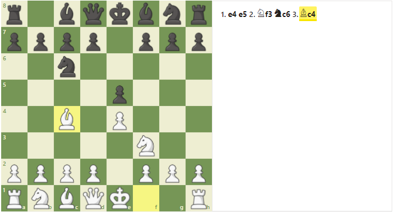
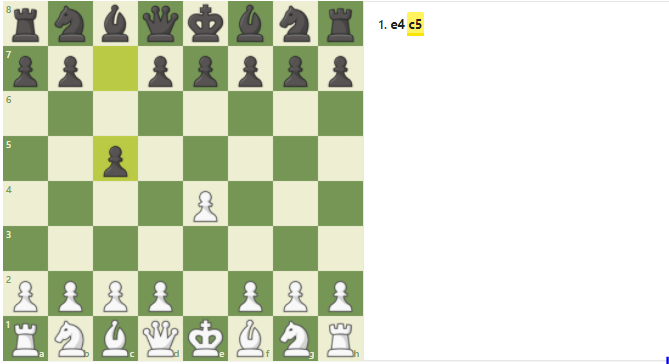
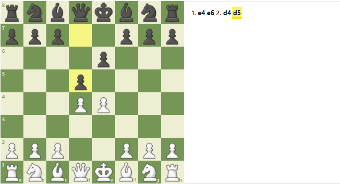

Top 3 aperturas para principiantes
Las primeras jugadas de una partida de ajedrez puede que sean las jugadas más importantes que realices. En esas jugadas, establecerás tus planes iniciales y pelearás por tu espacio en el tablero. La mayoría de los principiantes no necesitan memorizar aperturas exactas y en lugar de ello deben centrarse en buenos principios de apertura como controlar el centro y desarrollar las piezas. Sin embargo, es bueno conocer algunas aperturas ya que son comunes y ayudan a crear buenos planes. Aún así, recuerda no memorizar demasiado o pronto te verás perdido en un mar de variantes.
-
#1 Apertura Italiana
Las partidas con la apertura italiana comienzan con 1.e4 e5 2.Cf3 Cc6 3.Ac4. El objetivo es controlar el centro de manera rápida con el peón y el caballo y después colocar el alfil en una de las casillas más peligrosas. También estás preparando enrocarte de manera segura.
 -
#2 Defensa Siciliana
La Defensa Siciliana es la opción más popular con negras, escogida por los jugadores agresivos. Normalmente, las blancas juegan 2.Cf3 y 3.d4 lo que ganará espacio central, pero permitirá a las negras beneficiarse del intercambio de un peón de alfil por un peón central.
 -
#3 Defensa Francesa
La defensa francesa es una de las primeras aperturas estratégicas que todo ajedrecista debería aprender. Después de e5 (ahora o después), ambos jugadores tendrán una cadena de peones. Uno de los riesgos de la defensa francesa es el alfil de c8, el cual tendrá problemas para ser desarrollado.
